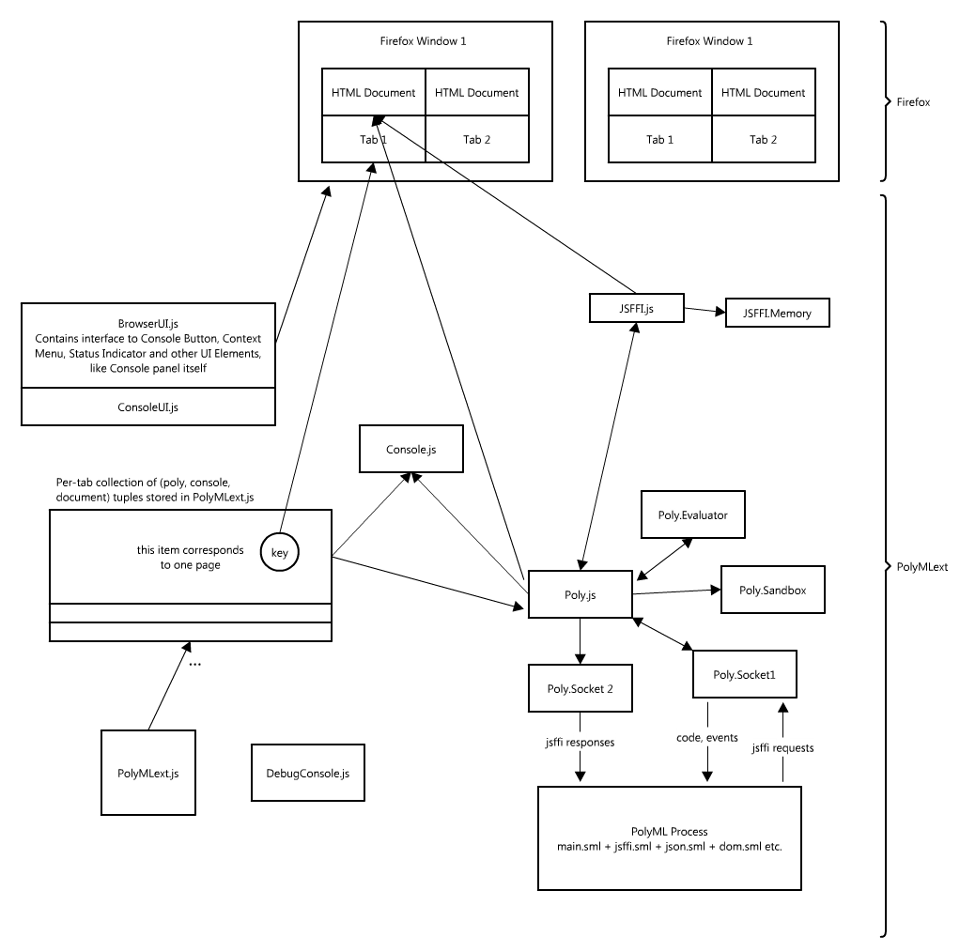

To understand the limitations and potential applications of the PolyChrome extension, it is important to have some insight on how it works
Firefox browser is as a collection of HTML rendering engine, DOM, JavaScript engine, networking components and many other components. When you enter a URL into the address bar and press enter, Firefox loads an HTML document from the server (or local filesystem), parses it into a Document Object Model (DOM), renders it on the screen and executes the JavaScript code embedded in the HTML document. JavaScript can modify how the document is rendered on screen and react to various user interaction events like mouse clicks and keyboard presses. DOM, which is the in memory representation of HTML, is reflected into JavaScript as a JavaScript object. Calling methods and modifying attributes of this DOM-JavaScript wrapper object affects the DOM and the way it is rendered to the user.
After the document is loaded, parsed and rendered, PolyChrome looks at the DOM to see if the document contains any script tags with PolyML code. If that's the case a PolyML process is started specifically for this document. A socket communication is established between the JavaScript components and PolyML components. The code that was found on the page is sent through the socket to PolyML for evaluation.
Because we have this connection between JavaScript and PolyML and because JavaScript has access to DOM, we can now ask JavaScript to modify the DOM from within SML.
Read more about the FFI in section Using JavaScript FFI and read the next section to see what are the implications of using this socket-based-foreign-function-interface.
Below is a rough scheme of the PolyChrome components and their relationships.
MSc thesis on PolyChrome: http://www.inf.ed.ac.uk/publications/thesis/online/IM100814.pdf